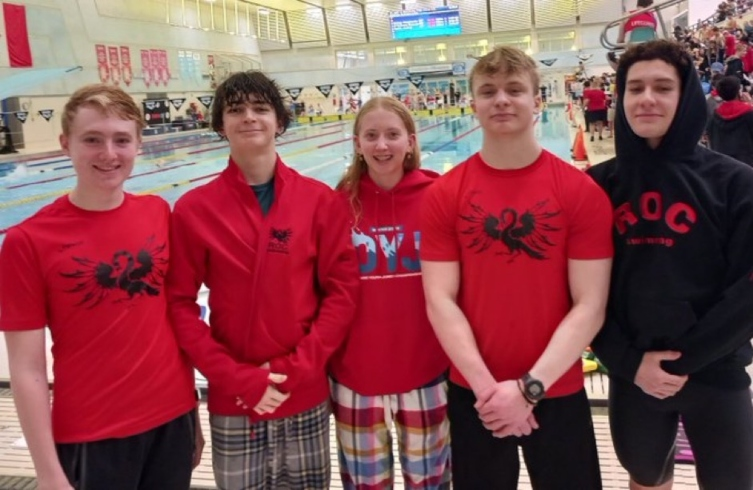

As part of of my competitive swimming life, I often attend competitions across Ontario and Quebec. Recently, between February 16 and February 19, I went to Toronto to attend the OYJ (Ontario Youth-Junior) championships. This was a provincial-level competition that I had qualified for in the winter, and it was amazing to have the opportunity to compete alongside some of the best swimmers in Ontario.
Here is the link to the competition website.
Here is an image of me with some of my teammates who attended the meet with me:
Here is a link to my second page.